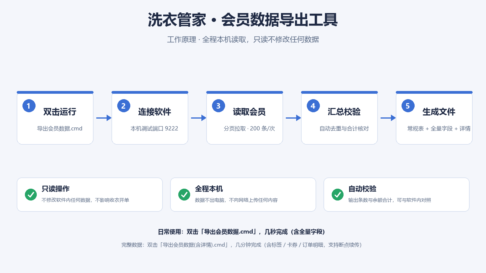

把会员数据一键导出为 Excel：常规表 / 全量字段 / 完整详情
v1.5 · 2026-09-24 · 洗衣管家 6.1.23 实测通过
| 入口 | 用时 | 导出内容 |
|---|---|---|
导出会员数据.cmd（日常推荐） | 几秒钟 | 常规表（9 列）+ 全量字段表（会员档案全部字段，62 列） |
导出会员数据(含详情).cmd（完整版） | 几分钟 | 上面全部 + 逐会员详情：标签、充值/赠送余额、卡券、订单明细、最近充值信息；增量更新（只重取新增/变更会员）；支持断点续传 |
导出结果 文件夹。打开会员查询页面.cmd。支持：搜索（姓名 / 电话 / 拼音 / 卡号 / 订单号）、筛选（级别 / 来源 / 状态 / 余额）、排序、点击查看完整详情（订单明细、卡券、全部字段）、一键复制电话、导出筛选结果为 CSV。已抓取订单详情的会员，在详情面板中可展开每笔订单的衣物、照片与支付记录；每次导出后页面数据会自动刷新。
| 文件 | 用途 |
|---|---|
会员导出_xxx.xlsx | 常规表：联系人 / 电话 / 级别 / 余额 等 9 列，日常推荐 |
会员全量数据_xxx.xlsx | 全量字段表：会员档案全部字段（62 列；金额字段单位为“分”） |
会员详情_xxx.xlsx | （含详情模式）详情总表 + 订单明细 + 卡券明细 |
会员导出_xxx.csv、会员全量数据_xxx.csv | 通用表格（Excel / WPS 直接打开） |
会员导出_xxx.json、会员详情_xxx.json | 原始数据（程序用 / 备份） |
| 列名 | 说明 |
|---|---|
| 联系人 | 会员姓名（部分会员未登记姓名时为空） |
| 电话 | 手机号（固定文本格式，不会变成科学计数法） |
| 会员级别 | 如：VIP会员 / 全价会员 / 代收点 |
| 账户余额(元) | 当前账户余额，单位：元 |
| 会员卡号 | 有实体卡时显示卡号；空 = 未办卡 |
| 订单数 | 历史订单笔数 |
| 注册时间 | 会员注册时间 |
| 来源 | 微信公众号 / 店内 等 |
| 状态 | 正常 / 禁用 |
双击 打开会员查询页面.cmd 即可（会先刷新数据再打开）。若浏览器未自动弹出，可手动打开 查询页面\index.html。
先确认洗衣管家正在运行且已登录。若反复出现：完全退出洗衣管家，双击运行
以调试模式启动洗衣管家.cmd 重新打开软件，然后再导出。
全量字段 = 会员档案里的全部字段（62 列，一次性读取，很快）；会员详情 = 每个会员的动态资料（标签、卡券、订单明细、充值记录），需要逐会员抓取，由“含详情”入口生成。
为保持原始数据不失真，全量表按系统存储单位（分）导出；常规表的余额已换算成“元”。
不会。工具会先与上次数据比对：只重新获取新增会员和有变化的会员（如余额变动、新订单、资料修改），没变化的直接使用已存详情。日常更新通常只需几十秒到几分钟。
重新运行同一个入口即可：会自动跳过已抓取成功的会员、继续补抓（断点续传）。若遇到取数失败，程序会自动等待 180 秒后重试，无需人工干预；只有连续 30 分钟完全没有进展时才会自动停止（数据均已保存，重跑可继续）。
每次运行都实时读取当下数据，并显示“会员总数 / 余额合计”供与软件内外对照。工具只读取数据：不修改内容、不影响收衣开单和打印流程。
导出文件包含客户姓名、电话、地址等个人信息，请妥善保管，不要随意外发。工具全程在本机运行，不向网络上传任何数据。